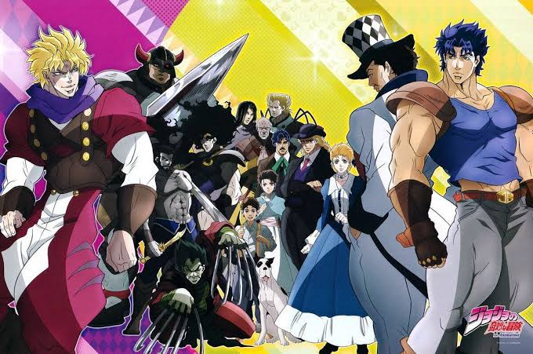
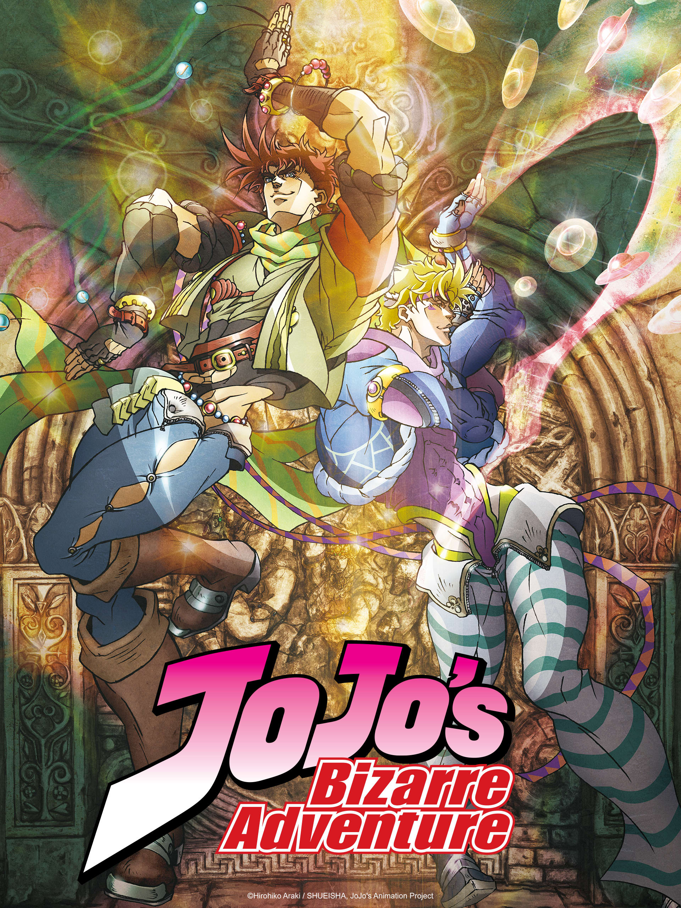
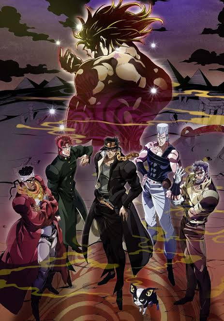

Review Anime
Mengenal lebih dekat kisah para JoJo
dari generasi ke generasi.
Part 1: Phantom Blood

Phantom Blood
merupakan awal dari petualangan
keluarga Joestar. Ceritanya berpusat
pada Jonathan Joestar yang harus
menghadapi saudara angkatnya,
Dio Brando, setelah Dio mendapatkan
kekuatan misterius dari sebuah
topeng batu.
Bagian ini memperkenalkan konflik
antara Jonathan dan Dio serta
menjadi dasar bagi kisah panjang
keluarga Joestar.
Genre: Aksi, Petualangan,
Supernatural
Rating pribadi: 8/10
Situs Resmi JoJo
Part 2: Battle Tendency

Battle Tendency
mengikuti Joseph Joestar,
cucu Jonathan, yang terlibat
dalam pertarungan melawan
makhluk kuno yang dikenal
sebagai Pillar Men.
Berbeda dari Jonathan, Joseph
memiliki kepribadian yang
usil dan penuh akal. Ia
mengandalkan kecerdikan,
strategi, serta kemampuan
Hamon untuk menghadapi
lawan-lawannya.
Genre: Aksi, Petualangan,
Supernatural
Rating pribadi: 9/10
Situs Resmi JoJo
Part 3: Stardust Crusaders

Stardust Crusaders
menceritakan perjalanan Jotaro
Kujo bersama teman-temannya
menuju Mesir untuk menghadapi
Dio Brando yang kembali muncul.
Bagian ini memperkenalkan
Stand, kekuatan supernatural
yang menjadi salah satu ciri
khas utama JoJo. Petualangan
mereka dipenuhi pertarungan
unik dan musuh dengan
kemampuan yang beragam.
Genre: Aksi, Petualangan,
Supernatural
Rating pribadi: 9.5/10
Situs Resmi JoJo